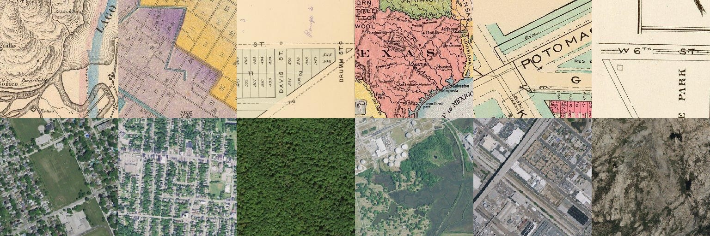
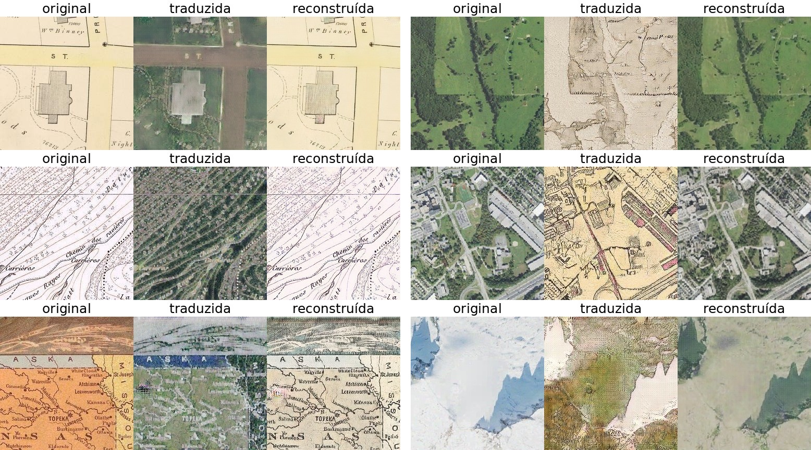

APRENDIZADO NÃO-SUPERVISIONADO · PUCRS · PROF. LUAN GARCIA
Mapas históricos ↔ satélite
Uma CycleGAN treinada do zero para traduzir imagens entre dois domínios, sem pares
João Henrique da Luz · Vittor Brits · Marcelo Novembro de 2026
A TRADUÇÃO ESCOLHIDA
Dois sentidos, sem nenhum par de treino
A → B Mapa histórico → satélite
Dado um recorte de mapa antigo, gerar como aquela região apareceria vista de cima, em uma ortoimagem.
B → A Satélite → mapa histórico
Dada uma foto aérea, desenhá-la no estilo de um mapa antigo: papel, traço de tinta, cor chapada e rótulos.
Por que é interessante e difícil
Os dois domínios mostram a mesma coisa (ruas, quadras, rios, ferrovias), mas o mapa é uma abstração com texto, e a foto tem textura que o mapa não registra (telhados, copas, sombras). A tradução não é bijetiva: um sentido precisa descartar informação e o outro precisa inventá-la.
0B treino · ortoimagens USGS, cidades dos EUA, zooms 14–16
0B teste
[−1, 1]normalização, sem data augmentation
Nenhum mapa do teste de A aparece no treino. Em B, 20 das 21 regiões do teste também aparecem no treino, em tiles diferentes; só Baltimore (162 imagens) é inédita.
DATASET
Os dois domínios lado a lado

↑ A · mapas históricos: texto, símbolos, papel↓ B · satélite: textura, sem texto
DATASET · COLETA
Dois scripts em Python, só com fontes abertas
A David Rumsey Map Collection
Busca na API do acervo com 12 termos (city plan, Sanborn, plat, topographic…): 720 mapas de 1700 a 1950
Recorte aleatório de 1024 px na resolução original (IIIF), reduzido a 256 px: escala de quarteirões, como no satélite
Filtros por metadado (só mapas; sem vistas, capas nem mapas-múndi) e por imagem (sem papel liso nem molduras)
Limpeza com CLIP zero-shot: saem 808 recortes de ilustração, texto e mapas pictóricos
720 mapas → 7.963 recortes → 7.155 após a limpeza
650 mapas no dataset final · licença CC BY-NC-SA 3.0
B USGS The National Map
Fonte: tiles de ortoimagem NAIP (~1 m por pixel), sem chave de API
Regiões: 36 cidades dos EUA (Boston, Nova York, São Francisco…) e 16 áreas naturais (montanha, costa, rio, lavoura)
Amostragem: tiles sorteados num raio em torno de cada centro, nos zooms 14, 15 e 16
Filtro: sai o tile sem cobertura, só com água ou uniforme (827 de 8.360)
8.360 tiles sorteados → 7.533 após o filtro
52 regiões · domínio público (governo dos EUA)
Treino e teste separados por mapa (A) e por bloco geográfico (B). Pré-processamento: JPEG RGB normalizado para [−1, 1], sem data augmentation (o flip espelharia o texto). Scripts em coleta/.
ARQUITETURA
Dois geradores ResNet e dois discriminadores PatchGAN
O ciclo B → A → B é simétrico, com D_A.
GERADOR ResNet de 9 blocos
c7s1-64, d128, d256, 9 × R256, u128, u64, c7s1-3, saída tanh. Os blocos residuais preservam a estrutura espacial, e o traçado das ruas deve sobreviver à tradução. InstanceNorm funciona melhor que BatchNorm com batch 1.
DISCRIMINADOR PatchGAN 70 × 70
C64, C128, C256, C512 e uma conv de 1 canal, LeakyReLU 0,2. Para 256 px a saída é uma grade 30 × 30 de decisões, cada uma sobre um trecho de 70 × 70. Julgar textura local é o que importa para estilo, com poucos parâmetros.
FUNÇÕES DE CUSTO
Cada termo da perda e o motivo da escolha
Termo
Escolha
Por quê
Adversarial
LSGAN, sem sigmoid
Gradientes estáveis e sem saturação; a perda do D é multiplicada por 0,5 para ele aprender mais devagar que o G
Consistência cíclica
L1, λ = 10
É o que permite treinar sem pares: a volta precisa recuperar a entrada; L1 borra menos que L2
Identity
Desligada, λ_id = 0
Forçaria G_AB(b) ≈ b, pouco natural entre mapa e foto; a ablação com λ_id = 0,5 ficou como trabalho futuro
Image pool
50 imagens geradas
O D vê um histórico de falsas, o que estabiliza o treino (Shrivastava et al., 2017)
Ruim manchas rosa; traço pesadoBom quadras e prédios preservadosBom malha fina, estilo de gravuraRuim árvores somem: papel e pseudo-texto
RESULTADOS · CONJUNTO DE TESTE INTEIRO
Métricas de reconstrução no teste inteiro
Sentido
Imagens
Cíclica L1
PSNR
SSIM
A → B → A (mapa)
1.056
0,109
22,26 dB
0,821
B → A → B (satélite)
947
0,113
23,41 dB
0,820
O que medem
Só a reconstrução (original contra a volta do ciclo). Não existe imagem de referência para a tradução, então não medem o realismo. Não calculamos FID.
Cuidado com B
Em B, 20 das 21 regiões do teste também aparecem no treino, em tiles diferentes; só Baltimore (162 imagens) é inédita. Em A, nenhum mapa do teste aparece no treino. O número de B é otimista.
RESULTADOS · TESTE INTEIRO · MAPA → SATÉLITE
Melhores e piores casos pela cíclica L1
Melhores (0,034 e 0,037): mapas cadastrais de papel creme com ruas e quadras. O texto continua legível na tradução.
Piores (0,327 e 0,325): mapas coloridos ou ilustrados. A reconstrução troca a cor do papel: a informação de cor não passou pelo ciclo.
RESULTADOS · TESTE INTEIRO · SATÉLITE → MAPA
Melhores e piores casos pela cíclica L1
Melhores (0,046 e 0,050): mata e campos verdes (Ozarks, Shenandoah). A tradução é papel quase vazio e, mesmo assim, a reconstrução devolve a mata.
Piores (0,417 e 0,364): neve das Cascades. Neve não tem equivalente em mapa, e a reconstrução fica cinza-bege.
DEMONSTRAÇÃO
Tradução ao vivo com os pesos finais, na CPU

Imagens do conjunto de teste, três por domínio: melhor, mediana e pior pela cíclica L1.
Cada tradução leva cerca de 1,6 s na CPU, com G_epoca_100.pt (44 MB).
uv run python analyze.py traduzir --pesos runs/principal/G_epoca_100.pt --dominio A --imagens arquivo.jpg
ANÁLISE CRÍTICA · FALHA 1
O texto do mapa não some: é copiado ou inventado
EVIDÊNCIA
Mapa → satélite: “CANAL”, “DOUGLAS”, “LEMBERG” e os números dos lotes “404” e “405” continuam como letras claras sobre o satélite gerado.
Satélite → mapa: surgem rótulos e uma escrita cursiva sem sentido, sobretudo no bairro arborizado.
HIPÓTESE
Satélite não tem equivalente para texto. Apagá-lo custaria perda cíclica, e o PatchGAN 70 × 70 julga textura local, então tolera letras pequenas.
No sentido inverso, D_A aprendeu que mapas têm rótulos, e o G_BA desenha algo com cara de texto para enganá-lo.
COMO TESTAR
Contar trechos com texto nas saídas em todo o conjunto de teste; treinar com recortes sem texto, ou mascarar o texto na perda cíclica, e comparar.
ANÁLISE CRÍTICA · FALHA 2
Mapa → satélite é o sentido mais difícil
EVIDÊNCIA NAS CURVAS
D_B cai de 0,20 para 0,01 e G_adv A→B sobe de 0,45 para 0,96 até o fim. No outro sentido, D_A fica perto de 0,05 e G_adv B→A estabiliza perto de 0,8.
EVIDÊNCIA NAS IMAGENS
As traduções A → B saem lavadas e acinzentadas, com textura repetitiva: o mar vira copa de árvore e o relevo vira cristas pálidas.
HIPÓTESE
Assimetria de informação: ir de foto para mapa é descartar detalhe; ir de mapa para foto é inventar telhados, copas e sombras que o mapa não registra. O gerador fica numa textura média, e o D_B a reconhece com facilidade.
ANÁLISE CRÍTICA · FALHA 3
Reconstruções quase perfeitas a partir de traduções ruins
EVIDÊNCIA
Nos 8 casos de teste a reconstrução é fiel, mesmo quando a tradução falha. O bairro arborizado vira quase papel vazio, mas a reconstrução devolve as copas.
HIPÓTESE
Esteganografia (Chu et al., 2017): o gerador esconde a imagem original em sinais de baixa amplitude e o outro gerador os decodifica. A perda cíclica cai sem a tradução ficar fiel.
TESTE
Somar ruído (σ = 0,02 e 0,05) à tradução antes do segundo gerador.
SENSIBILIDADE (limiar 3,0)
A, σ = 0,02
2,93
A, σ = 0,05
3,62
B, σ = 0,02
0,83
B, σ = 0,05
1,0
A→B→A amplifica o ruído; B→A→B não. Confirma só em parte.
Só 50 imagens e dois σ: indício, não prova.
ANÁLISE CRÍTICA · INSTABILIDADES
Oscilações pontuais, das quais o treino se recuperou
Quando
O que aconteceu
Hipótese
Época 5, satélite → mapa
As 4 saídas de teste com faixas horizontais coloridas; somem na época 10
Oscilação do começo do treino, com o D_A ainda instável
Épocas 61–65 e 83–84
G_adv B→A sobe a 0,88–0,98 e D_A cai a cerca de 0,002; na época seguinte voltam a ~0,8 e ~0,05
O D_A vence por algumas épocas; o equilíbrio se refaz sem intervenção
Época 100, satélite → mapa
Manchas rosa-magenta fortes em 3 das 4 imagens, ausentes nas épocas 50 e 75
Possível imitação do rosa de prédios em mapas antigos, ou artefato tardio; confirmar no teste inteiro
O treino nunca colapsou: a perda cíclica caiu em todas as fases, e nenhuma perda virou NaN.
LIMITAÇÕES
O que esta análise não sustenta
Avaliação
A análise visual usa 4 + 4 imagens fixas de teste. As métricas do teste inteiro medem só a reconstrução, não o realismo. Sem FID nem avaliação humana.
Experimentos
Uma única execução, com seed 42 e batch 1, sem busca de hiperparâmetros. A ablação com identity loss não foi treinada.
Dados
Domínios desalinhados: mapas de várias regiões e escalas contra cidades dos EUA em zooms 14–16. Parte das diferenças pode vir disso, não do modelo.
CONCLUSÃO
A CycleGAN aprendeu o estilo e a estrutura, mas não aprende a inventar o que falta
Satélite → mapa funciona melhor
Descartar detalhe é fácil: ruas e quadras viram traço de mapa convincente.
Mapa → satélite fica limitado
É preciso inventar textura que o mapa não tem, e o discriminador de satélite vence.
Perda cíclica baixa não basta
Reconstruções perfeitas a partir de traduções ruins sugerem informação escondida.
Próximos passos: ablação com identity loss, máscara de texto e mapas e satélites da mesma região e escala.